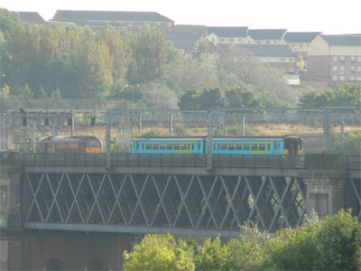
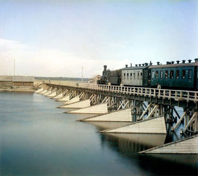
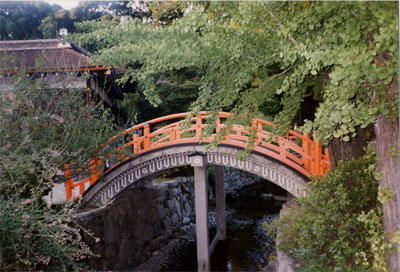
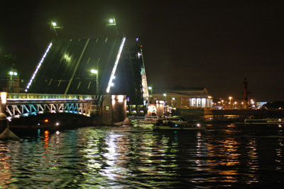

Додати до закладок (Ctrl+D)
Зробити стартовою
Навігація
- Головна
- Конструкція
- Iсторiя
- Будівництво мостів
- Класифікація
- Архітектура мостів
- Найвiдомiшi
- Катастрофи
- Фотогалерея
- Про сайт
Партнери
Класифiкацiя мостiв

Залізничний міст Едуарда VII ст. у Ньюкаслi
Залізничний міст Едуарда VII ст. у Ньюкаслi
По області застосування
По області застосування мости діляться на:
- Залізнодорожні
- Автомобільні
- Метромости
- Пішохідні
- Комбіновані (наприклад, автомобільно-залізнодорожні).
По конструкції
По конструкції мости діляться на:
- Балочні — найпростіший вид мостів. Призначені для перекриття невеликих прольотів. Пролітні будови — балки, що перекривають відстань між опорами.
- Висячі — основна конструкція, що несе, виконана з гнучких елементів, проїжджа частина підвішена.
- Вантові — різновид висячих мостів: роль основної конструкції, що несе, виконує вантова ферма, виконана з прямолінійних сталевих канатів. Цей вигляд представляють всі найбільші по довжині і висоті прольоту мости світу. Прикладом такого моста може служити Великий Обухівський міст у Санкт-Петербурзі.
- Арочні — основними конструкціями, що несуть, є арки або зведення. При цьому опорам передаються не тільки вертикальні, але і горизонтальні зусилля.
- Понтонні, або наплавні — тимчасові мости на плавучих опорах.
За типом проїзду
- мости для їзди зверху
- низом
- посередині
Розлучні мости
- Мости, що розводяться підняттям середньої частини
- проліт піднімається в горизонтальному положенні вгору (наприклад залізничний міст в Ростові-на-Дону)
- проліт або прольоти піднімаються повертаючись навколо одного з шарнірів (наприклад Палацовий міст у Санкт-Петербурзі)
- Поворотні мости: у таких мостів середня частина шарнірно укріплена на річки, що стоїть в середині, опорі. Міст розлучається поворотом середньої частини на 90°, таким чином середня частина стає паралельна руслу річки. Прекрасним прикладом такої конструкції служить Варваровський міст у українському місті Миколаєвіповоротний проліт якого має довжину 134 метри.
Виділяють також трубопровідні мости, акведуки (використовуються для транспортування води) і віадуки (мости через яри або ущелини; сполучають крапки, рівні по висоті).

Залізничний міст через річку Шуя Карелія. Дана фотографія була зроблена в 1915 році
Залізничний міст через річку Шуя Карелія. Дана фотографія була зроблена в 1915 році
Варто відзначити окремо горбаті мости, які відрізняються своєю формою: вони істотно
вигнуті вгору.

Дерев'яний арочний міст в Кіото, Японія
Дерев'яний арочний міст в Кіото, Японія
Особливий тип мостів — розлучні мости. У розведеному стані міст не заважає проходу суднів. Своїми розлучними мостами знаменитий Санкт-Петербург, де всі мости через Неву, окрім Великого Обухівського моста, є розлучними.
Особливі конструкції розлучних мостів:

Палацовий міст у Санкт-Петербурзі у розведеному стані
Палацовий міст у Санкт-Петербурзі у розведеному стані